در درسهای قبل با نسبتهای مثلثاتی و دایرهٔ مثلثاتی آشنا شدید. در این درس روابط بین این نسبتها و کاربردهایی از آنها را بیان میکنیم.
مثلث قائمالزاویه ABC را درنظر بگیرید.
(الف) اندازهٔ وتر یعنی \( x \) را بیابید و سپس مقدار عددی هر یک از چهار نسبت مثلثاتی را برای زاویه \( \theta \) و \( \alpha \) بهدست آورید.
ب. با توجه به مقادیر عددی حاصل در قسمت (الف)، مقدار \( \sin^2 \alpha + \cos^2 \alpha \) و \( \sin^2 \theta + \cos^2 \theta \) را بهدست آورید.
پ. درستی رابطهٔ \( \sin^2 \theta + \cos^2 \theta = 1 \) را با استفاده از تعریف و اطّلاع مثلث بررسی کنید.
$$ \begin{align*} &(\sin^2 \theta) + (\cos^2 \theta) \\ \\ &= \sin^2 \theta + \cos^2 \theta \\ \\ &= (\frac{BC}{AC})^2 + ( \frac{AB}{AC})^2 \\ \\ &= \frac{BC^2 + AB^2}{AC^2} = \ \ . . . . . . \end{align*} $$
ت. مشابه قسمت (ب)، درستی رابطهٔ \( \sin^2 \alpha + \cos^2 \alpha = 1 \) را بررسی کنید.
کار در کلاس
با توجه به رابطه بالا، یعنی \( \sin^2 \alpha + \cos^2 \alpha = 1 \)، جاهای خالی را پر کنید:
الف) $$ \begin{align*} & \sin^2 \alpha + \cos^2 \alpha = 1 \\ \\ & \implies \sin^2 \alpha = \dots \dots \\ \\ & \implies \sin \alpha = \pm \ \ \sqrt{\dots \dots} \end{align*} $$
(ب) $$ \begin{align*} & \sin^2 \alpha + \cos^2 \alpha = 1 \\ \\ & \implies \cos^2 \alpha = \dots \dots \\ \\ & \implies \cos \alpha = \pm \ \ \sqrt{\dots \dots} \end{align*} $$
اگر \( \alpha \) زاویهای در ناحیهٔ سوم مثلثاتی باشد و \( \sin \alpha = \frac{-4}{5} \)، آنگاه مقدار \( \cos \alpha \)، \( \tan \alpha \)، و \( \cot \alpha \) را بهدست آورید.
$$ \begin{align*} \cos \alpha &= \pm \sqrt{1 - \sin^2 \alpha} \\ \\ \overset{\text{در ناحیهٔ سوم}}{\Rightarrow} \quad \cos \alpha &= -\sqrt{1 - ( \frac{-4}{5})^2} \\ \\ & = -\sqrt{\frac{9}{25}} \\ \\ & = -\frac{3}{5} \\ \\ \end{align*} $$
\[ \tan \alpha = \frac{\sin \alpha}{\cos \alpha} = \frac{-\frac{4}{5}}{-\frac{3}{5}} = \frac{4}{3} \]
\[ \cot \alpha = \frac{1}{\tan \alpha} = \frac{1}{\frac{4}{3}} = \frac{3}{4} \]
رابطههای تانژانت بر حسب کسینوس و کتانژانت بر حسب سینوس
در این قسمت رابطهای برای تانژانت بر حسب کسینوس یک زاویه و همچنین رابطهای برای کتانژانت بر حسب سینوس، بهدست میآوریم:
\[ \sin^2 \alpha + \cos^2 \alpha = 1 \implies \frac{\sin^2 \alpha}{\cos^2 \alpha} + \frac{\cos^2 \alpha}{. . . . . . } = \frac{1}{. . . . . . } \]
\[ \sin^2 \alpha + \cos^2 \alpha = 1 \implies \frac{\sin^2 \alpha}{\sin^2 \alpha} + \frac{. . . . . .}{. . . . . .} = \frac{. . . . . .}{. . . . . .} \]
۳. اگر \( 90^0 < \alpha < 180^0 \) و \( \tan \alpha = \frac{-3}{4} \)، آنگاه سایر نسبتهای مثلثاتی زاویه \( \alpha \) را بهدست آورید.
اتحاد مثلثاتی
هر یک از تساویهای زیر یک اتحاد مثلثاتی هستند:
$
1 + \tan^2 \alpha = \frac{1}{\cos^2 \alpha} \quad \quad(\cos \alpha \neq 0)
$
$
\sin^2 \alpha + \cos^2 \alpha = 1
$
$
1 + \cot^2 \alpha = \frac{1}{\sin^2 \alpha} \quad \quad (\sin \alpha \neq 0)
$
این تساویها برای هر زاویه \( \alpha \) همواره برقرار است و یک اتحاد مثلثاتی را تشکیل میدهند.
هرگاه بخواهیم ثابت کنیم بین دو عبارت مثلثاتی یک تساوی (اتحاد) برقرار است، میتوانیم یک طرف تساوی را بنویسیم و با توجه به روابط بین نسبتهای مثلثاتی بهطرف دیگر برسیم. به مثال زیر توجه کنید:
درستی اتحاد مثلثاتی زیر را بررسی کنید:
\[ \left( \frac{1}{\cos \theta} + \tan \theta \right)(1 - \sin \theta) = \cos \theta \]
حل:
\[ \begin{align*} \text{طرف چپ} \ \ &= \ \ \left( \frac{1}{\cos \theta} + \tan \theta \right)(1 - \sin \theta) \\ \\ & = \left( \frac{1}{\cos \theta} + \frac{\sin \theta}{\cos \theta} \right)(1 - \sin \theta) \\ \\ & = \frac{1 + \sin \theta}{\cos \theta}(1 - \sin \theta) \\ \\ & = \frac{1 - \sin^2 \theta}{\cos \theta} \\ \\ & = \frac{\cos^2 \theta}{\cos \theta} \\ \\ & = \cos \theta \ \ = \ \ \text{طرف راست} \end{align*} \]
۱. با فرض بامعنی بودن هر کسر، درستی هر یک از تساویهای زیر را بررسی کنید:
\( \sin^4 \theta - \cos^4 \theta = \sin^2 \theta - \cos^2 \theta \) :(الف)
\[ \begin{align*} & \text{طرف چپ} = \sin^4 \theta - \cos^4 \theta \\ \\ & \xrightarrow{\text{اتحاد مزدوج}} (\sin^2 \theta - \cos^2 \theta)(\sin^2 \theta + \cos^2 \theta) \end{align*} \]
$ \frac{1}{\cos \alpha} + \cot \alpha = \frac{\tan \alpha + \cos \alpha}{\sin \alpha} $ :(ب)
\( \begin{align*} \text{طرف راست} &= \frac{\tan \alpha + \cos \alpha}{\sin \alpha} \\ \\ & = \frac{\tan \alpha}{\cos \alpha} + \frac{\cos \alpha}{\sin \alpha} \\ \\ & = \frac{\frac{\cos \alpha}{\sin \alpha}}{\sin \alpha} + \ \ . . . . . . \\ \\ & = \ \ . . . . . . \ \ + \ \ . . . . . . \end{align*} \)
۲) کدام یک از تساویهای زیر یک اتحاد است؟ چرا؟
\( \sin^4 \alpha + \cos^4 \alpha = 1 - 2 \sin^2 \alpha \cos^2 \alpha \) : (الف)
\( \sin^4 \alpha + \cos^4 \alpha = \sin^2 \alpha + \cos^2 \alpha \) :(ب)
۳) با ضرب کردن طرفین اتحاد مثلثاتی \( 1 + \tan ^2 \alpha = \frac{1}{\cos ^2 \alpha} \) در \( 1 + \cot^2 \alpha \)، یک اتحاد مثلثاتی بسازید؛ سپس درستی آن را اثبات کنید.
۱) فرض کنید \( \alpha \) زاویهای در ناحیهٔ دوم مثلثاتی باشد و \( \cos \alpha = - \frac{3}{5} \). نسبتهای دیگر مثلثاتی زاویهٔ \( \alpha \) را بهدست آورید.
۲) اگر \( \tan \alpha = \frac{-4}{3} \) و \( \alpha \) زاویهای در ناحیهٔ چهارم مثلثاتی باشد، نسبتهای دیگر مثلثاتی زاویهٔ \( \alpha \) را بهدست آورید.
۳) اگر \( \sin 135^0 = \frac{\sqrt{2}}{2} \)، آنگاه نسبتهای دیگر مثلثاتی زاویهٔ \( 135^0 \) را بهدست آورید.
۴) اگر \( \tan 240^0 = \sqrt{3} \)، آنگاه نسبتهای دیگر مثلثاتی زاویهٔ \( 240^0 \) را بهدست آورید.
۵) شخصی میخواهد عرض یک رودخانه را اندازهگیری کند. او ابتدا مطابق شکل، نقطهای چون \( C \) و سپس نقطهای مانند \( A \) را در امتداد \( C \) و در طرف دیگر رودخانه مشخص میکند و به اندازهٔ \( 200 \) متر از \( C \) بهصورت افقی در امتداد رودخانه حرکت میکند تا به نقطهٔ \( B \) برسد. اگر زاویهٔ دید این شخص (از نقطهٔ \( B \) به نقطهٔ \( A \)) \( 20^0 \) باشد و \( \sin 20^0 = 0.342 \)، او چگونه میتواند عرض رودخانه را محاسبه کند؟ (پاسخ خود را تا دو رقم اعشار بنویسید.)
۶) با فرض بامعنی بودن هر کسر، درستی هر یک از تساویهای زیر را بررسی کنید.
\( \frac{1}{\sin \theta} \times \tan \theta = \frac{1}{\cos \theta} \) : (الف)
\( \frac{\cos \theta}{1 + \sin \theta} = \frac{1 - \sin \theta}{\cos \theta} \) : (ب)
\( \frac{1 + \tan \alpha}{1 + \cot \alpha} = \tan \alpha \) : (پ)
$ 1 - \frac{cos^2 x}{1 + sin x} = sin x $ : (ت)
$ \frac{1}{cos x} - tan x = \frac{cos x }{1 + sin x} $ : (ث)
بیشتر بدانیم
وی یکی از مفاخر علمی ایران، ریاضیدان و اخترشناس سدۀ چهارم هجری قمری در اول رمضان ۳۲۸ (هـ.ق) در بوزجان (تربت جام امروزی)، در مرز خراسان و افغانستان زاده شد. او مقدمات ریاضیات زمان را همان جا، نزد پدر و عمویش فرا گرفت. در سن ۲۰ سالگی به بغداد رفت و نزد اساتید مختلفی به تحصیل خود ادامه داد. وی پس از مدتی به یکی از دانشمندان مشهور زمان خود تبدیل شد و با دانشمندان هم عصر خود، مکاتبات علمی داشت. به عنوان مثال، وقتی ابوریحان در خوارزم بود، برای یوزجانی که در بغداد بود، همزمان فرهنگی ماه را با هم مقایسه میکردند. ابوالوفا در سال ۳۸۸ (هـ.ق) در بغداد درگذشت.
او آثار پیشینیان (ایرانی و یونانی) مثل "مقدمات" اقلیدس، "جبر و مقابله" خوارزمی، "جبر دیوفانت" و "مسئله" بطلمیوس و غیره را تفسیر نوشت. خود نیز ابتکارات و نوآوریهای بسیاری در هندسه و مثلثات دارد.